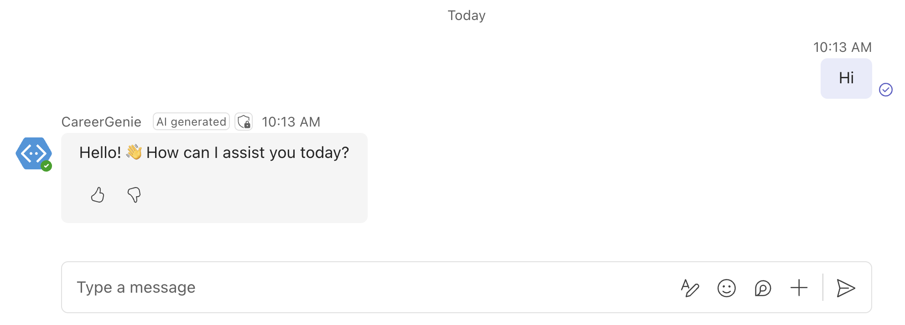
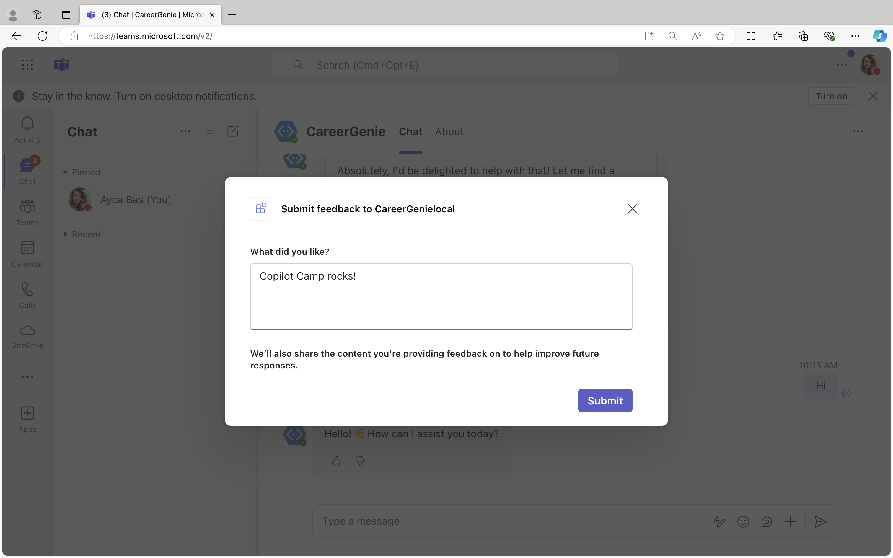
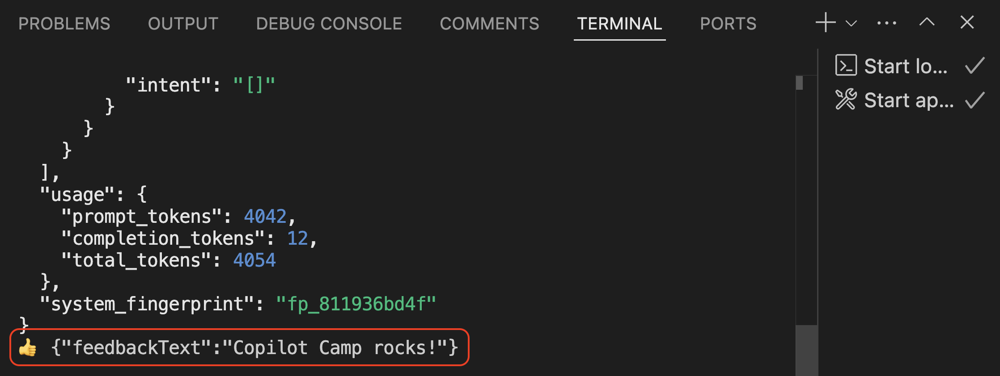
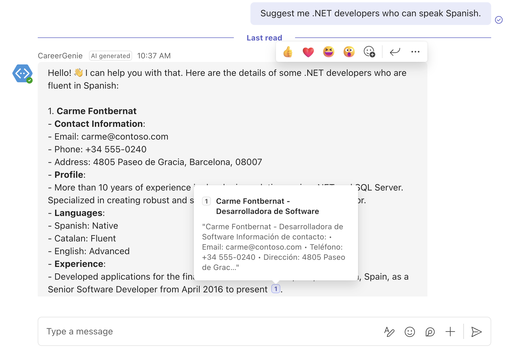
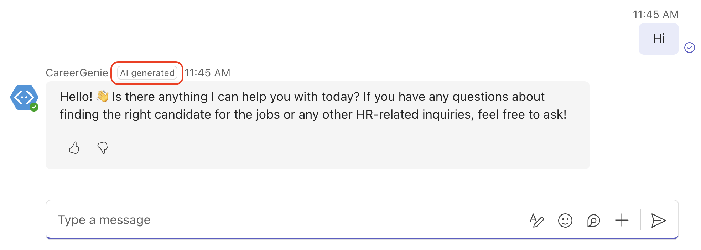
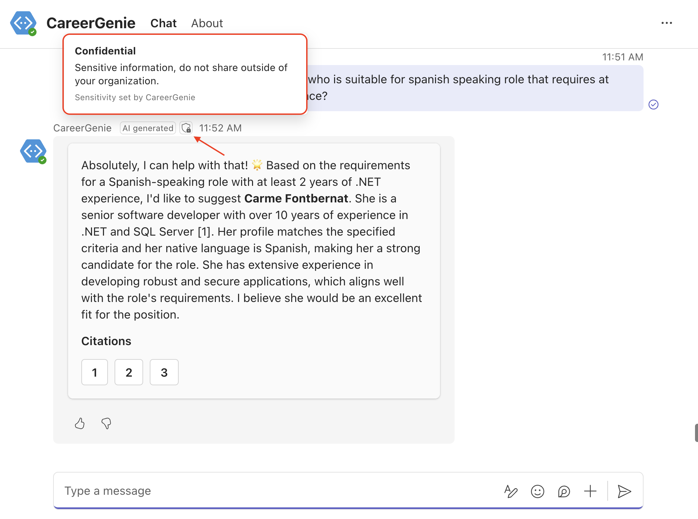

ラボ BTA3 - ユーザー エクスペリエンスの強化
このラボでは Powered by AI と呼ばれる、Teams AI ライブラリが提供する一連の機能について学び、それらをカスタム エンジン エージェントに組み込んでユーザー エクスペリエンスを向上させます。
このラボで行うこと:
- Powered by AI 機能とは何かを学ぶ
- フィードバック ループを有効化して ユーザー フィードバックを収集する
- Adaptive Cards で引用 (citation) をカスタマイズする
- Generated by AI ラベルを有効化する
- Sensitivity ラベルを有効化する
Azure OpenAI と Teams AI ライブラリを使用してカスタム AI モデルとオーケストレーションを備えた Custom engine エージェントを構築したい場合は、これらのラボを実施してください。
はじめに
Powered by AI とは?
Powered by AI とは、Teams AI ライブラリが提供する機能群で、カスタム エンジン エージェントとの対話をより魅力的かつユーザー フレンドリーにします。主な機能は次のとおりです:
-
フィードバック ループ: ユーザーは AI の応答に対してサムズアップまたはサムズダウンで評価できます。このフィードバックは AI の精度と有用性を継続的に向上させます。
-
引用 (Citations): AI が参照した情報源を提示し、透明性と信頼性を確保します。
-
Generated by AI: AI システムが生成したメッセージに「AI generated」とラベル付けし、AI と人間の応答を区別できるようにします。
-
Sensitivity 情報: 共有情報が機密性を伴う場合、Sensitivity ラベルが表示され、組織外への共有可否を示します。
前の演習では Retrieval-Augmented Generation (RAG) とそれをカスタム エンジン エージェントに統合する方法を学びました。本演習では「Powered by AI」機能を活用してユーザー エクスペリエンスを強化します。手順は次のとおりです:
- フィードバック ループの実装
- 引用のカスタマイズ
- AI 生成メッセージのラベル付け
- Sensitivity 情報の表示
これらの Powered by AI 機能を組み込むことで、カスタム エンジン エージェントはより透明で信頼性が高く、ユーザーに優しいものになり、全体のエクスペリエンスが向上します。
演習 1: フィードバック ループを有効化する
この演習では、前のラボで作成したソース コードを引き続き使用できます。
手順 1: アプリにフィードバック ループを統合する
プロジェクトで src/app/app.ts を開き、アプリケーション インスタンスを見つけて ai プロパティの中に enable_feedback_loop: true を追加します。更新後のアプリケーション インスタンスは次のようになります。
const app = new Application({
storage,
ai: {
planner,
//feedback loop is enabled
enable_feedback_loop: true
},
});
フィードバック応答を処理するため、src/app/app.ts に次のコード スニペットを追加します。
app.feedbackLoop(async (_context, _state, feedbackLoopData) => {
if (feedbackLoopData.actionValue.reaction === 'like') {
console.log('👍' + ' ' + feedbackLoopData.actionValue.feedback!);
} else {
console.log('👎' + ' ' + feedbackLoopData.actionValue.feedback!);
}
});
手順 2: フィードバック ループ機能をテストする
Career Genie をフィードバック ループ機能付きでテストしましょう。Visual Studio Code の Run and Debug タブから Debug in Teams (Edge) または Debug in Teams (Chrome) を選択してデバッグを開始します。ブラウザーで Microsoft Teams が開き、アプリの詳細が表示されたら Add を選択してチャットを開始します。
Tip: この演習をローカルでテストする
これまで実装した Teams AI ライブラリの一部機能は Teams App Test Tool では正しく動作しません。必ずローカルの Teams でテスト・デバッグしてください。
フィードバック ループを試す前に "Hi" と入力するか、"Suggest me .NET developers who can speak Spanish." のような質問をしてください。カスタム エンジン エージェントの応答の左下にサムズアップとサムズダウンのボタンが表示されていることを確認できます。

次にフィードバック ループをテストします。サムズアップまたはサムズダウンのいずれかをクリックすると、即座にフィードバック カードが表示されます。カードのテキスト フィールドにフィードバックを入力し、Submit をクリックします。

フィードバックが記録されたかどうかを確認するには、Visual Studio Code に戻りターミナルを確認してください。サムズアップまたはダウン、コメントを含むフィードバック内容が表示されます。

デバッグでフィードバック ループを深掘り
コードをデバッグすると仕組みを詳細に理解できます。app.feedbackLoop にブレークポイントを設定し、サムズアップまたはダウンをクリックしてテストしてください。feedbackLoopData.actionValue.reaction がリアクションを、feedbackLoopData.actionValue.feedback がテキスト フィードバックを取得しているのが確認できます。
演習 2: Adaptive Cards で引用をカスタマイズする
カスタム エンジン エージェントでデータ ソースを定義すると、Teams AI ライブラリは関連ドキュメントを参照する引用を自動的に有効化します。現在の体験を確認するために "Suggest me .NET developers who can speak Spanish." のような質問をしてみてください。引用箇所にマウスを重ねるとドキュメントの冒頭が表示されることが分かります。

この演習では、引用の体験をさらにカスタマイズし、Adaptive Cards を使用して表示方法を変更します。
手順 1: 引用用の Adaptive Card を作成する
src/app/ フォルダーに card.ts という新しいファイルを作成し、次のコード スニペットを追加します。
import { AdaptiveCard, Message, Utilities } from '@microsoft/teams-ai';
/**
* Create an adaptive card from a prompt response.
* @param {Message<string>} response The prompt response to create the card from.
* @returns {AdaptiveCard} The response card.
*/
//Adaptive card to display the response and citations
export function createResponseCard(response: Message<string>): AdaptiveCard {
const citationCards = response.context?.citations.map((citation, i) => ({
type: 'Action.ShowCard',
title: `${i+1}`,
card: {
type: 'AdaptiveCard',
body: [
{
type: 'TextBlock',
text: citation.title,
fontType: 'Default',
weight: 'Bolder'
},
{
type: 'TextBlock',
text: citation.content,
wrap: true
}
]
}
}));
const text = Utilities.formatCitationsResponse(response.content!);
return {
type: 'AdaptiveCard',
body: [
{
type: 'TextBlock',
text: text,
wrap: true
},
{
type: 'TextBlock',
text: 'Citations',
wrap: true,
fontType: 'Default',
weight: 'Bolder'
},
{
type: 'ActionSet',
actions: citationCards
}
],
$schema: 'http://adaptivecards.io/schemas/adaptive-card.json',
version: '1.5'
};
}
この Adaptive Card では、引用を Action.ShowCard ボタンとして一覧表示し、クリックすると詳細を表示します。また、応答のメイン コンテンツを引用ボタンと一緒に表示します。ユーザーが引用の詳細を確認したい場合、ボタンをクリックしてドキュメント全体を読むことができます。
手順 2: PredictedSayCommand を使用して引用体験をカスタマイズする
PredictedSayCommand とは?
PredictedSayCommand は、AI システムが実行する応答ディレクティブです。PredictedSayCommand をカスタマイズすることで、引用やフィードバック ループなどの Powered by AI 機能をエージェントのアクティビティに細かく統合でき、AI の応答をアプリの要件に合わせて調整できます。
src/app/app.ts を開き、先ほど作成した Adaptive Card をインポートするために次のスニペットをファイル上部に追加します。
import { createResponseCard } from './card';
botbuilder のインポートに CardFactory を追加し、更新後は次のようになります。
import { CardFactory, MemoryStorage, MessageFactory, TurnContext } from "botbuilder";
"@microsoft/teams-ai" のインポートに AI と PredictedSayCommand を追加し、更新後は次のようになります。
import { Application, ActionPlanner, OpenAIModel, PromptManager, AI, PredictedSayCommand} from "@microsoft/teams-ai";
引用をカスタマイズするため、src/app/app.ts に次の PredictedSayCommand アクションを追加します。
app.ai.action<PredictedSayCommand>(AI.SayCommandActionName, async (context, state, data, action) => {
let activity;
if (data.response.context && data.response.context.citations.length > 0 ) {
const attachment = CardFactory.adaptiveCard(createResponseCard(data.response));
activity = MessageFactory.attachment(attachment);
}
else {
activity = MessageFactory.text(data.response.content);
}
activity.entities = [
{
type: "https://schema.org/Message",
"@type": "Message",
"@context": "https://schema.org",
"@id": ""
}
];
activity.channelData = {
feedbackLoopEnabled: true
};
await context.sendActivity(activity);
return "success";
});
手順 3: カスタマイズした引用体験をテストする
Career Genie をカスタマイズ済み引用体験でテストします。Visual Studio Code の Run and Debug タブから Debug in Teams (Edge) または Debug in Teams (Chrome) を選択してデバッグを開始します。ブラウザーで Microsoft Teams が開き、アプリの詳細が表示されたら Add を選択してチャットを開始します。
Tip: この演習をローカルでテストする
これまで実装した Teams AI ライブラリの一部機能は Teams App Test Tool では正しく動作しません。必ずローカルの Teams でテスト・デバッグしてください。
テストするには、まず "Hi" または "Hello" と挨拶し、その後 "Can you suggest any candidates for a senior developer position with 7+ year experience that requires Japanese speaking?" のような質問をしてみてください。

Adaptive Cards によるカスタマイズされた引用体験では、各引用に対してボタンが表示されます。引用ボタンをクリックするとドキュメント ビューが展開され、候補者の履歴書詳細を確認できます。
演習 3: Generated by AI ラベルを有効化する
この演習では PredictedSayCommand を使用してユーザー エクスペリエンスをさらにカスタマイズします。AI と人間の応答を区別しやすくするため、AI システムが生成したメッセージに「AI generated」ラベルを表示します。
手順 1: PredictedSayCommand で Generated by AI ラベルを有効化する
src/app/app.ts を開き、PredictedSayCommand アクションを見つけて activity.entities 内に次のコード スニペットを追加します。
// Generated by AI label
additionalType: ["AIGeneratedContent"]
更新後の activity.entities は次のようになります。
activity.entities = [
{
type: "https://schema.org/Message",
"@type": "Message",
"@context": "https://schema.org",
"@id": "",
// Generated by AI label
additionalType: ["AIGeneratedContent"],
},
];
手順 2: Generated by AI ラベルをテストする
Generated by AI ラベル付きで Career Genie をテストします。Visual Studio Code の Run and Debug タブから Debug in Teams (Edge) または Debug in Teams (Chrome) を選択してデバッグを開始します。ブラウザーで Microsoft Teams が開き、アプリの詳細が表示されたら Add を選択してチャットを開始します。
Tip: この演習をローカルでテストする
これまで実装した Teams AI ライブラリの一部機能は Teams App Test Tool では正しく動作しません。必ずローカルの Teams でテスト・デバッグしてください。
テストするには Career Genie に挨拶するだけで構いません。最初のメッセージの上部に小さく「AI generated」のラベルが表示されます。

演習 4: Sensitivity ラベルを有効化する
最後の演習では、PredictedSayCommand を活用して Sensitivity ラベルを有効化します。Career Genie は HR 業務の専門家で、社内の機密情報を共有する場面が多々あります。このようなシナリオでは、AI 生成メッセージに Sensitivity ラベルが表示され、組織外への共有可否を示します。
手順 1: PredictedSayCommand で Sensitivity ラベルを有効化する
src/app/app.ts を開き、PredictedSayCommand アクションを見つけて activity.entities 内に次のコード スニペットを追加します。
// Sensitivity label
usageInfo: {
"@type": "CreativeWork",
name: "Confidential",
description: "Sensitive information, do not share outside of your organization.",
}
更新後の activity.entities は次のようになります。
activity.entities = [
{
type: "https://schema.org/Message",
"@type": "Message",
"@context": "https://schema.org",
"@id": "",
// Generated by AI label
additionalType: ["AIGeneratedContent"],
// Sensitivity label
usageInfo: {
"@type": "CreativeWork",
name: "Confidential",
description: "Sensitive information, do not share outside of your organization.",
}
},
];
手順 2: Sensitivity ラベルをテストする
Sensitivity ラベル付きで Career Genie をテストします。Visual Studio Code の Run and Debug タブから Debug in Teams (Edge) または Debug in Teams (Chrome) を選択してデバッグを開始します。ブラウザーで Microsoft Teams が開き、アプリの詳細が表示されたら Add を選択してチャットを開始します。
Tip: この演習をローカルでテストする
これまで実装した Teams AI ライブラリの一部機能は Teams App Test Tool では正しく動作しません。必ずローカルの Teams でテスト・デバッグしてください。
テストするには Career Genie に挨拶するか、"Can you suggest a candidate who is suitable for spanish speaking role that requires at least 2 years of .NET experience?" のような質問をしてみてください。

Career Genie のメッセージで「AI generated」ラベルの隣に Sensitivity ラベルが表示されていることを確認してください。Sensitivity ラベルにマウスを重ねると、組織固有のガイダンスが表示されます。
おめでとうございます！
Powered by AI キットでユーザー エクスペリエンスを強化するラボ BTA3 を完了しました。さらに学習を進めたい場合、このラボのソース コードは Copilot Developer Camp リポジトリ で公開されています。
次のラボ BTA4「認証でソリューションを保護する」に進んでください。